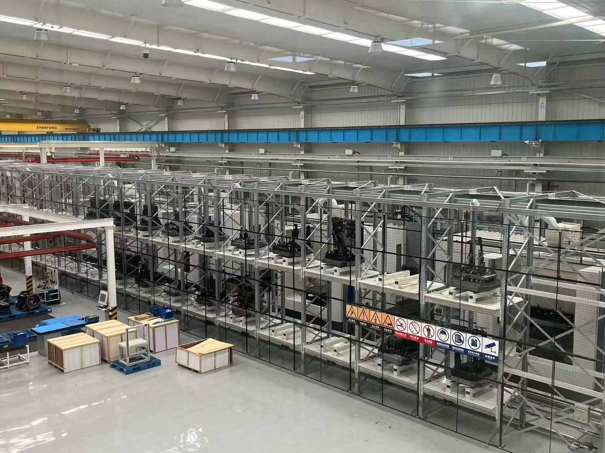
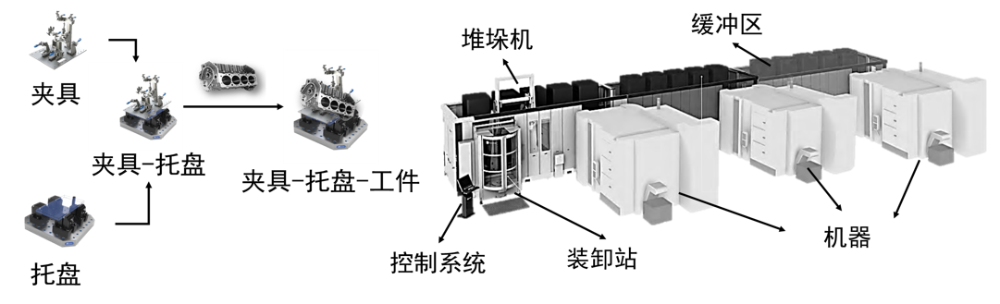
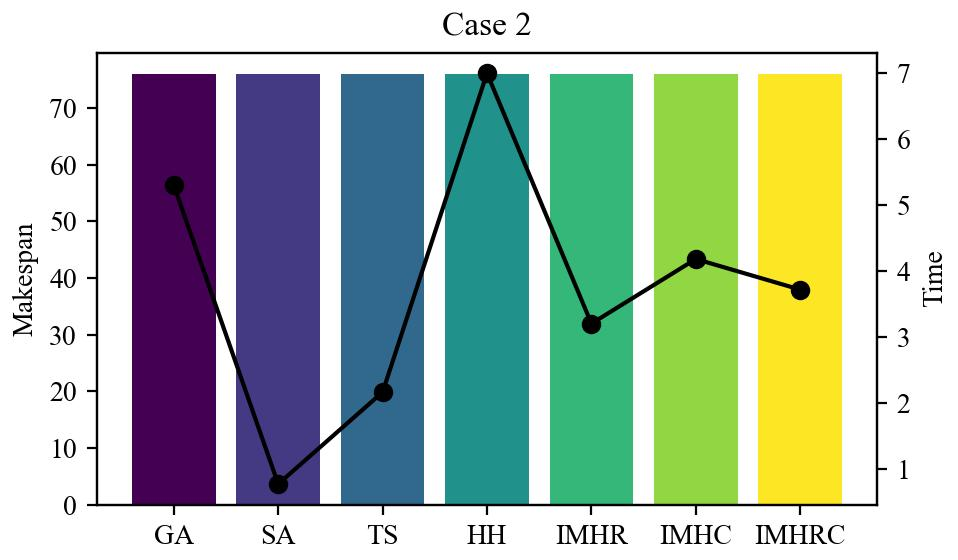
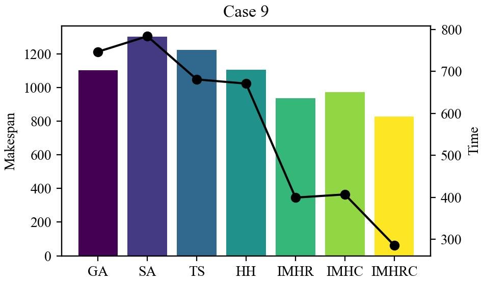
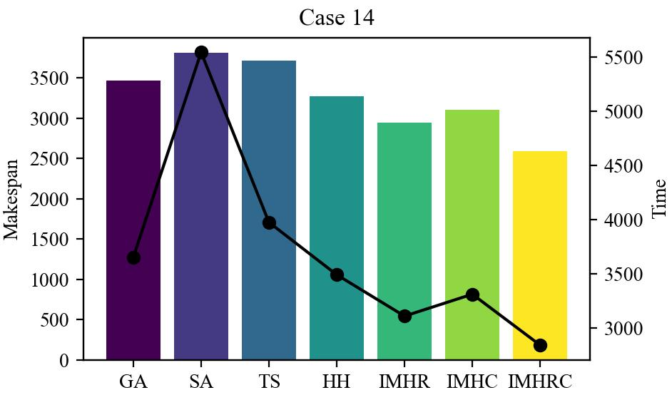
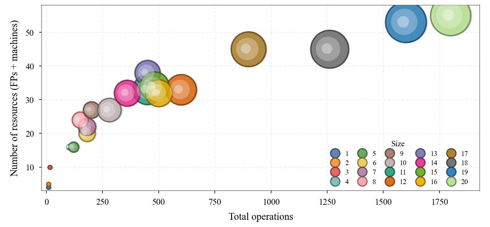
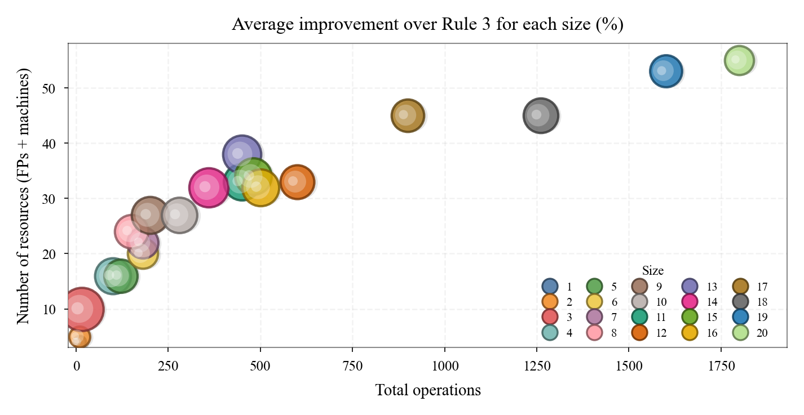
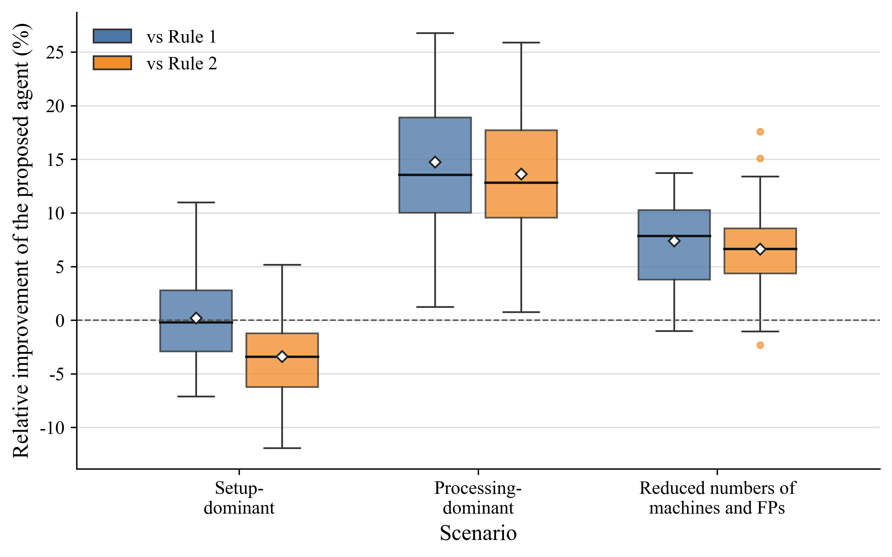
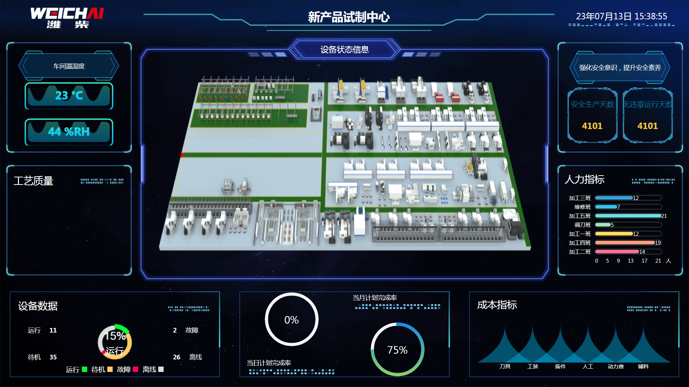

业务抽象与数学建模
围绕生产计划、多资源分配与动态调度，梳理业务逻辑、决策变量和约束，将实际需求转化为 LP/MILP 模型。
围绕生产计划、多资源分配与动态调度，梳理业务逻辑、决策变量和约束，将实际需求转化为 LP/MILP 模型。
运用 Gurobi、调度规则与元启发式算法，结合问题规模与结构设计求解策略，并评估解质量与计算效率。
开展 Q-learning 状态、动作与奖励设计，通过泛化测试和反例分析评估策略，并探索 LLM Agent 辅助改进。
使用 Python、Gurobi、SimPy 等工具，贯通需求抽象、算法实现、实验验证、结果可视化与系统对接。
愿意走出熟悉的领域，主动面对有难度的任务，对解决问题保持信心，并通过学习与实践逐步突破。
能够拆解目标、安排阶段任务，并根据过程与结果复盘，及时调整方法和优先级。
在压力与不确定性下，合理制定计划、把握任务重点，保持清晰判断与持续行动，推进任务完成。
重视识别和调节自身情绪，在遇到挫折或分歧时，保持理性判断，将注意力转回问题与沟通。
根据不同背景和关注点调整表达，在科研、企业项目与跨文化协作中理解需求、建立共识。
围绕关键目标确定优先级，对承担的任务和结果负责；保持进取心，追求更高目标并愿意承担相应责任。
多资源约束调度研究
真正的瓶颈，
是如何把系统的物理柔性
转化为生产效率。


定制化与交付周期缩短推动柔性自动化升级。Fastems 中国应用调查中，78% 的受访企业计划在一至三年内升级 PAS，高效运行成为关键问题。
通过标准化托盘连接异构机床、夹具、设置站与自动搬运存储系统，实现资源共享与柔性生产。
工序与机器选择、夹具托盘占用、设置站装卸及物料托盘释放必须协同决策；局部选择会影响后续等待与可行空间。
已有方法多依赖固定规则或逐实例优化，RL 在多资源场景中也常用于辅助选规则、算子或参数；本研究进一步探索端到端联合决策及反例驱动改进。
逐步补齐真实 PAS 中的资源与占用关系。
创新：刻画 FP 从装载、等待、加工到卸载的连续占用。
创新：联合处理装卸任务分配、排队与 FP 释放。
创新：描述 MP 可用性与 FP 释放之间的决策耦合。
从每个实例重新计算，走向可复用、可改进的策略。
建立正确性与最优性基准。
规则初始化结合关键路径搜索。
学习可跨订单复用的联合策略。
用反例持续诊断和精化表示。
论文成果
机器—夹具托盘联合调度与连续占用建模
Yulu Zhou, Shichang Du*, Andrea Matta
引入有限物料托盘的发动机制造案例
进一步纳入有限设置站与装卸任务
Yulu Zhou, Andrea Matta, Shichang Du*
工序—夹具托盘—机器端到端联合决策
同一道工序不仅需要机器，还会同时占用夹具托盘、物料托盘和设置站；装卸、等待与加工必须连续衔接。
在满足全部资源与工艺约束的前提下，最小化总完工时间。
每个工件选择一个物料托盘；同一 MP 同时只承载一个工件，完成后才能释放。
每道工序选择一台可用机器；同一机器上的工序不能重叠。
每道工序选择一个兼容的夹具托盘；FP 从装载开始到卸载结束持续占用。
装载与卸载选择设置站；同一 ST 上的装载、卸载任务不能冲突。
保证等待→装载→加工→卸载的先后关系与持续时间，并最小化 Cmax。
IMHRC 用五层编码联合表示物料托盘、机器、夹具托盘、设置站和工序顺序，避免把耦合决策拆散处理。
两组真实订单相对人工排程的结果；同时，各类资源利用率均得到提升。
高质量起点：组合工件排序、最短加工时间与最少装卸次数等优先规则。
聚焦瓶颈：沿关键路径重新选择物料托盘、机器和夹具托盘。
始终可执行：修复设置站与工序顺序，并在多类资源可用时间的交集中插入任务。
从小、中、大三组算例中各取一个代表案例。柱形表示平均 makespan，折线表示平均求解时间；两者越低越好。



总体结果：在由真实数据生成的 15 个算例中，IMHRC 在多数算例上能够以更短的时间获得更优解。
先理解问题，再定义决策；复用分析框架，按场景调整目标、资源与约束。
调度什么？边界在哪里？
明确任务、系统边界、时间尺度与动态事件。
优化什么？哪些必须满足？
区分交期、效率、成本等目标与不可违反的要求。
谁能替代？谁需协同？
识别资源种类、容量、可替代性与兼容关系。
先做什么？何时释放资源？
梳理工序先后、装卸、运输及资源占用与释放。
哪些要决策？遵守什么规则？
转化分配、排序、数量与时间决策，以及关联约束。
资源分配、流程分支（if–else），以及尚未确定的任务先后顺序。
连续时间模型中的开始与完成时刻，以及需要决策的时长、流量或功率等连续量。
按场景需要，表示批次数量、车辆数量或人员数量等。
已知流程为“装载 → 加工 → 卸载”时，可直接约束时间：
待优化的先后关系由顺序变量与时间约束共同描述；资源释放条件限定占用区间，例如夹具持续占用至卸载完成。
剔除供应充足且不形成调度约束的标准化资源，重点刻画有限、专用或存在竞争与耦合的资源。
将兼容的机器—夹具—托盘合为候选方案，保留容量与占用约束。
经典 Benders：主问题确定 0–1 / 整数决策；固定后，连续线性子问题检验可行性、优化目标，并通过割反馈。
从少量方案起步，按需加入新路径或排程；整数最优求解可结合分支定价。
强化学习 · End-to-End Q-Learning
候选筛选与三层离散化共同控制状态—动作规模，使相似调度情境能够共享经验；核心是在保留关键决策差异与避免 Q 表过度稀疏之间取得平衡。
用装卸时间、加工时间、工序等待、机器等待、剩余工作量和工序柔性六个离散特征描述每个候选动作。
φₜ(a) = [bˡᵘᵗ, bᵖʳᵒᶜ, bᵒʷ, bᵐʷ, bʳᵉᵐ, bᶠˡᵉˣ]先生成所有可行的工序—夹具托盘—机器组合，再保留兼顾装卸、加工和等待偏好的代表候选，由智能体完成最终选择。
aₜ = (Oᵢⱼ, f, m) ∈ Ãₜ过程项惩罚本次动作造成的部分完工期增长；终止项评价完整调度相对参考方案的改善，并按案例规模归一化。
rₜ = (Cₜᵖ − Cₜ₊₁ᵖ)/Cʳᵉᶠ + Iₜβ(Cʳᵉᶠ − Cₘₐₓ)/Cʳᵉᶠ用即时回报与下一决策点的最佳估计共同更新 Q 值，使一次联合选择能够学习其对后续调度的影响。
Q ← Q + α[rₜ + γ max Q′ − Q]结果 · 100 个测试案例
完整测试集对比覆盖 GA、TS、SA 与多种规则组合；Gurobi 的评估范围为最小的 15 个案例。



在装卸时间占主导的极端场景中，三层离散化会把差异明显的装卸时间映射到同一类别，造成信息损失；智能体平均比 Rule 2 差 3.39%。而在加工主导与资源数量减少场景中，智能体仍保持明显优势。
围绕数据、目标与约束、未见场景，设计可验证、可回退的应用路径。
先把学习限制在经过验证的候选库中；LLM 在离线环节生成补充规则或算子组合，测试通过后再纳入候选库。
在线决策
离线改进
验证重点：与纯规则、元启发式和端到端 RL 对比可行率、解质量、响应时间及异常下的退化程度，评估灰盒方案的现场稳定性。
LLM Agent · Counterexample-driven Learning
通过反事实比较挖掘有害反例，由 LLM 提出可证伪的特征假设，再经过初筛与精筛决定方案的保留和迭代。
减少反例，保持整体性能
反例、Q 表与验证结果
提出可证伪的改进假设
修改表示并运行实验
记录接受与否决结果
反例基本消除或无稳定改进
同一状态下比较替代动作
每轮聚焦一个表示因素
代码 / 配置通过检查后训练
反例：同一决策状态下，存在使最终完工时间更短的可行替代动作。
是 → 保留候选，进入精筛
否 ↺ 回退原模型，换下一假设
是 → 接受新模型，进入下一轮
否 ↺ 保留原模型，重新诊断
记忆与迭代 ↺记录每轮结果，基于保留的模型重新挖掘反例。
结束条件：反例基本消除；或重新诊断后仍无稳定改进，记录剩余边界并结束本轮。
持续迭代中的挑战
历史记录缺失、摘要失真或检索遗漏，可能让 Agent 重走已否定的路线。
应对思路：结构化记录“假设—实验—结果—适用条件”，保留原始证据，实验前核对历史尝试。
冗长、无关或相互冲突的记录，可能使关键证据难以被有效利用。
应对思路：完整日志与当前上下文分开，按问题和模型版本检索，只引入相关证据、当前目标与未决问题。
潍柴动力 · 新产品试制车间
车间覆盖 120 余种产品、105 台加工设备，年产约 2.7 万件。工业排产算例最大达到 10,000 道总工序，按全部工件的工序数量合计；机器、夹具托盘、刀具与物料相互制约，并面临故障、质量异常与订单变更。
订单、数量与交付期
拆解为可排产的任务
分期检查产能与瓶颈
检查工装、刀具与物料
反馈计划与资源缺口
工艺路线与资源状态
描述多资源约束关系
快速构造可行初始解
迭代优化调度目标
下发可执行生产任务
故障、质量或订单变化
定位受影响任务与资源
保留已完成、撤回未执行
按场景规则局部优化
同步执行并持续反馈

现场结果
经过半年现场验证并投入使用，形成覆盖预排产、静态排产与动态排产的多层级排产系统。
将一线工人或计划员模糊、频繁变化的业务理解，转化为明确的决策变量、约束、目标和程序逻辑；区分稳定机制与可配置规则，降低需求反复变化带来的成本。
面对现场、计划、管理与技术人员，灵活切换业务语言、管理语言与数学语言；必要时借助熟悉双方语境的中间角色协调，并通过反复确认减少理解偏差。
识别不同角色关注的利益与核心问题，围绕共同目标确定需求优先级，协调关键使用者的合理诉求。
把交期、产能、插单与设备异常等业务需求转成结构化任务，选择专用 Agent，解释方案依据与关键权衡。
↓ 任务与约束 ↑ 方案与执行反馈
根据硬约束、实时性、可解释性与数据覆盖，选择或组合不同方法。
↓ 结果、异常与反例 ↑ 验证后更新规则、策略或模型
分析失败案例与分布变化，提出特征、规则组合、算子或训练方案的改进候选；经离线验证和版本审核后更新决策层。
共同的执行边界：约束校验、超时处理、保守回退与人工接管；自学习更新须先验证，再进入生产。
贯通建模、求解、学习与改进，面向工程可执行、跨场景泛化与持续迭代的智能调度。
研究动态扰动、连续状态 / 动作与更大规模问题，提升策略的泛化能力、稳定性与响应速度。
补足数据治理、系统接口、算法服务化、运行监控与异常回退等知识，提升算法接入与持续运行能力。
从 RL 选规则 / 算子等可控路线起步，通过离线回放、影子测试和小范围试运行，积累真实案例并验证收益与适用边界。